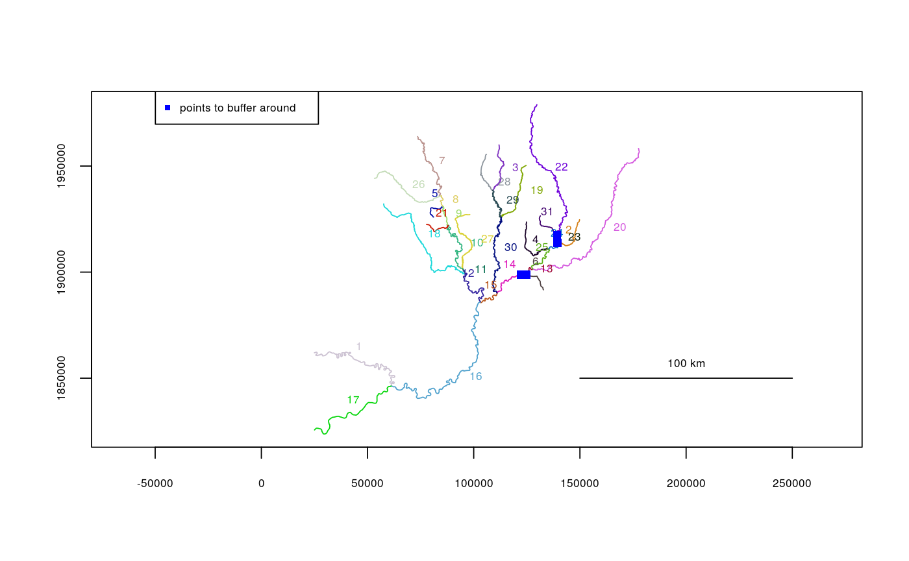
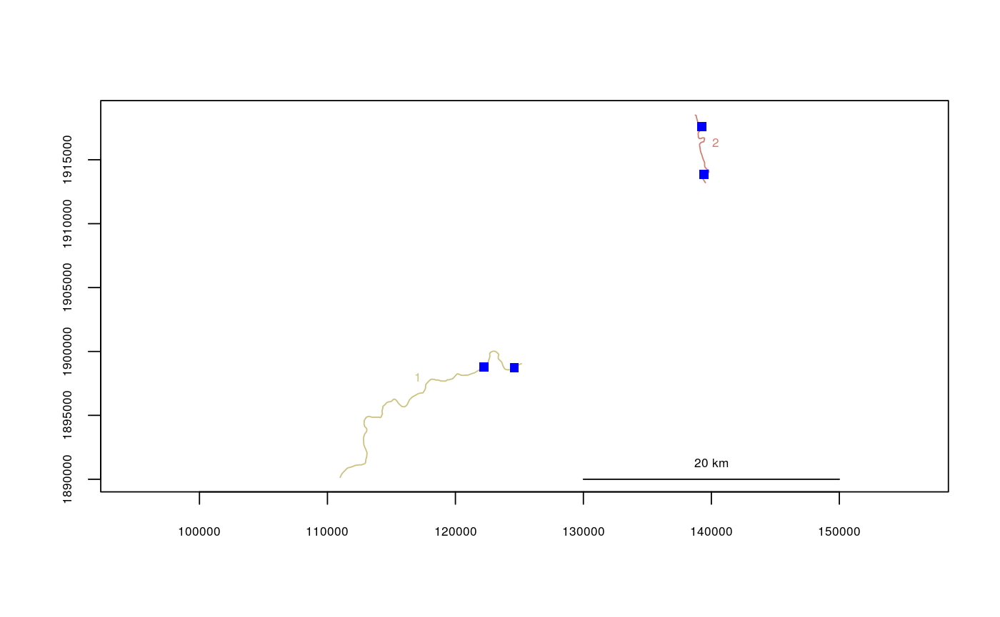
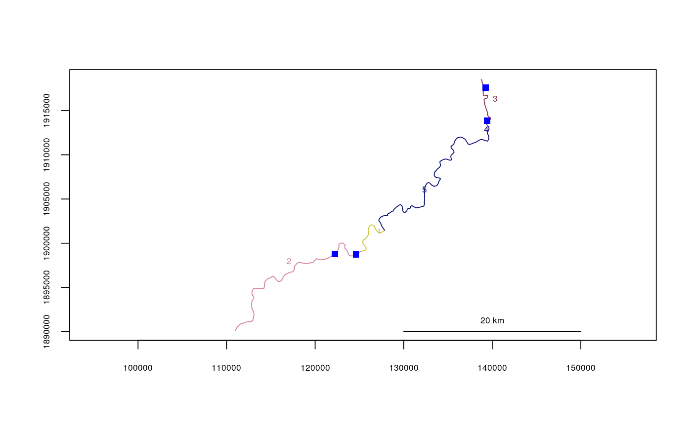
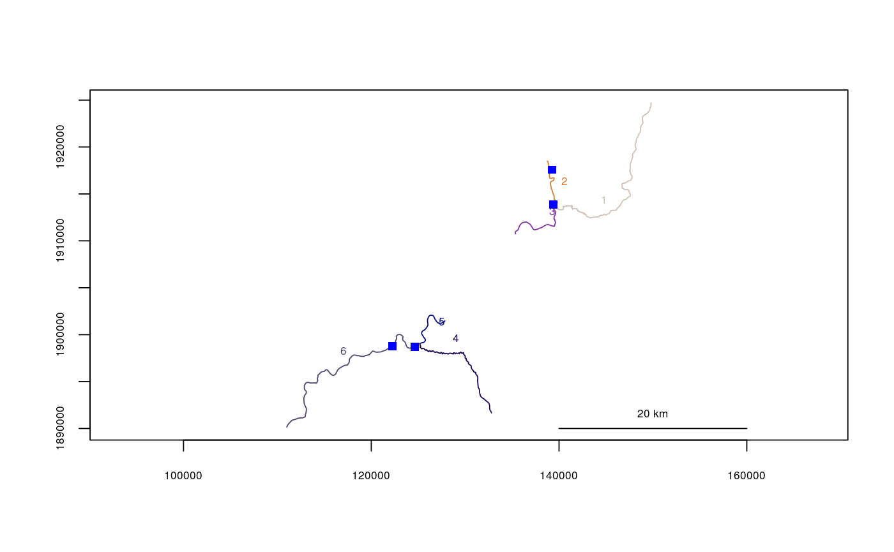

Removes line segments from a river network object that are not adjacent to a set of point data, given in X-Y coordinates.
trimtopoints(x, y, rivers, method = "snap", dist = NULL)
| x | Vector of x-coordinates of point data to buffer around |
|---|---|
| y | Vector of y-coordinates of point data to buffer around |
| rivers | The river network object to use |
| method | Three methods are available. If |
| dist | Distance to use for buffering, if |
A new river network object (see rivernetwork)
If method=="buffer", only distances to segment endpoints
and midpoints are checked, and still only whole segments are removed.
data(Koyukuk2) x <- c(139241.0, 139416.1, 124600.1, 122226.8) y <- c(1917577, 1913864, 1898723, 1898792) plot(x=Koyukuk2)points(x, y, pch=15, col=4)legend(par("usr")[1], par("usr")[4], legend="points to buffer around", pch=15, col=4, cex=.6)Koyukuk2.buf1 <- trimtopoints(x, y, rivers=Koyukuk2, method="snap")#>plot(x=Koyukuk2.buf1)points(x, y, pch=15, col=4)Koyukuk2.buf2 <- trimtopoints(x, y, rivers=Koyukuk2, method="snaproute")#>plot(x=Koyukuk2.buf2)points(x, y, pch=15, col=4)Koyukuk2.buf3 <- trimtopoints(x, y, rivers=Koyukuk2, method="buffer", dist=1000)#>plot(x=Koyukuk2.buf3)points(x, y, pch=15, col=4)